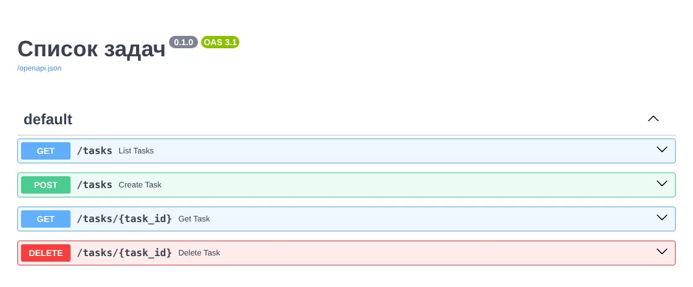

Первое API на FastAPI
То же приложение «список задач», но без страниц: сервер принимает и отдаёт JSON. FastAPI проверяет данные по моделям Pydantic, сам отвечает правильными кодами и строит документацию, в которой API можно попробовать. Около 40 минут.
Что такое методы HTTP, JSON и коды ответа, рассказано в разделе «REST API» — загляните туда сначала.
Что понадобится
Проект начинается с пустой папки и не зависит от первого проекта.
- Python 3.12 или новее: команда
python --version. - Понимание методов GET, POST, DELETE и кодов 200, 201, 404 — раздел «REST API».
- Пройденный первый проект пригодится для сравнения, но не обязателен.
Запросы отправляем из браузера. Для GET хватит адресной строки, а POST и DELETE удобно отправлять со страницы /docs,
которую FastAPI создаёт сам, — так одинаково на Windows, macOS и Linux. Пройденные шаги сохраняются в этом браузере.
API списка задач
Четыре маршрута: список, добавление, одна задача и удаление. Затем документация и тесты.
0 из 6 шагов пройдено
-
Шаг 1. Создайте проект и установите FastAPI
Новая папка и своё виртуальное окружение, как в первом проекте. Слово
[standard]в кавычках ставит вместе с FastAPI всё, что понадобится дальше: командуfastapi, серверuvicornи библиотекуhttpx, на которой работают тесты.Windows (PowerShell или командная строка)
Терминалmkdir fastapi-todo cd fastapi-todo python -m venv .venv .venv\Scripts\activate pip install "fastapi[standard]"macOS и Linux (Терминал)
Терминалmkdir fastapi-todo cd fastapi-todo python3 -m venv .venv source .venv/bin/activate pip install "fastapi[standard]"Ожидаемый результат
Последняя строка установки длинная: в ней почти 60 пакетов, среди них
fastapi-0.163.1,pydantic-2.14.3,starlette-1.10.0иuvicorn-0.54.0. Версию FastAPI покажет командаpip show fastapi:Name: fastapi Version: 0.163.1 Summary: FastAPI framework, high performance, easy to learn, fast to code, ready for production
Номер версии может быть новее — это нормально. Без кавычек вокруг
fastapi[standard]некоторые терминалы (например, zsh на macOS) не поймут квадратные скобки. -
Шаг 2. Первый маршрут: список задач
Создайте файл
main.py. Декоратор@app.get("/tasks")связывает адрес и метод GET с функцией — так же, как@app.getво Flask. Разница в ответе: функция возвращает обычный список Python, а FastAPI сам превращает его в JSON. Задачи пока хранятся в памяти сервера.main.pyfrom fastapi import FastAPI app = FastAPI(title="Список задач") tasks = [] @app.get("/tasks") def list_tasks(): return tasksЗапустите сервер в режиме разработки: он перезапускается при каждом сохранении файла.
Терминалfastapi dev main.pyОжидаемый результат
Терминал покажет адрес сервера и адрес документации и останется занятым сервером:
⚡️ Starting FastAPI in development mode 🐍 Using import string: main:app 🌐 Server started at http://127.0.0.1:8000 Documentation at http://127.0.0.1:8000/docs Logs: INFO: Will watch for changes in these directories: ['…/fastapi-todo'] INFO: Uvicorn running on http://127.0.0.1:8000 (Press CTRL+C to quit) INFO: Started reloader process [629] using WatchFiles INFO: Started server process [632] INFO: Waiting for application startup. INFO: Application startup complete.Адрес
http://127.0.0.1:8000/tasksв браузере покажет пустой список в формате JSON:[].В строке Will watch for changes будет полный путь к вашей папке (здесь его начало сокращено до …), номера процессов в квадратных скобках тоже будут другими. Не закрывайте это окно, команды вводите во втором окне терминала.
-
Шаг 3. Модели Pydantic и добавление задачи
Замените весь
main.py. Модели Pydantic описывают данные классами с подсказками типов, а FastAPI по ним проверяет запрос и строит ответ. Моделей две, потому что данные в разные стороны разные: клиент присылает только название (TaskCreate), а номер и отметку «готово» назначает сервер (Task).main.pyfrom itertools import count from fastapi import FastAPI from pydantic import BaseModel, ConfigDict, Field app = FastAPI(title="Список задач") class TaskCreate(BaseModel): model_config = ConfigDict(str_strip_whitespace=True) title: str = Field(min_length=1, max_length=200) class Task(BaseModel): id: int title: str done: bool = False tasks: dict[int, Task] = {} ids = count(1) @app.get("/tasks") def list_tasks() -> list[Task]: return list(tasks.values()) @app.post("/tasks", status_code=201) def create_task(data: TaskCreate) -> Task: task = Task(id=next(ids), title=data.title) tasks[task.id] = task return taskField(min_length=1, max_length=200)— ограничения названия, аstr_strip_whitespace=Trueсначала убирает пробелы по краям. Название из одних пробелов станет пустым и не пройдёт проверку — как в первом проекте.data: TaskCreateв параметрах функции означает «прочитай тело запроса как JSON и проверь по модели». Если проверка не прошла, функция даже не вызывается: FastAPI сам отвечает кодом 422.-> Taskи-> list[Task]— то, что функция возвращает. По этой подсказке FastAPI проверяет ответ и описывает его в документации.status_code=201— код «Created»: по правилам REST новая запись отвечает 201, а не 200.count(1)из модуляitertoolsвыдаёт номера 1, 2, 3… по одному при каждомnext(ids).
Отправим запрос. Откройте
http://127.0.0.1:8000/docs, раскройте строку POST /tasks, нажмите Try it out, впишите в поле Request body текст{"title": "Купить хлеб"}и нажмите Execute. Затем отправьте так же{"title": " "}— три пробела.Ожидаемый результат
Первый запрос: код
201и созданная задача в поле Response body:{ "id": 1, "title": "Купить хлеб", "done": false }Второй запрос: код
422. Это ответ Pydantic, функцияcreate_taskне вызывалась:{ "detail": [ { "type": "string_too_short", "loc": [ "body", "title" ], "msg": "String should have at least 1 character", "input": " ", "ctx": { "min_length": 1 } } ] }В
locуказано, где ошибка: в теле запроса, полеtitle; вmsg— что не так. Вinputвидно присланное значение с пробелами, хотя проверялась уже пустая строка. Каждый раз, когда вы сохраняетеmain.py, сервер перезапускается и список задач снова пуст: он живёт в памяти. -
Шаг 4. Одна задача, удаление и код 404
Добавим чтение одной задачи и удаление. Замените
main.pyцеликом: новые части — функцияfindи два маршрута в конце.main.pyfrom itertools import count from fastapi import FastAPI, HTTPException from pydantic import BaseModel, ConfigDict, Field app = FastAPI(title="Список задач") class TaskCreate(BaseModel): model_config = ConfigDict(str_strip_whitespace=True) title: str = Field(min_length=1, max_length=200) class Task(BaseModel): id: int title: str done: bool = False tasks: dict[int, Task] = {} ids = count(1) def find(task_id: int) -> Task: if task_id not in tasks: raise HTTPException(status_code=404, detail="Задача не найдена") return tasks[task_id] @app.get("/tasks") def list_tasks() -> list[Task]: return list(tasks.values()) @app.post("/tasks", status_code=201) def create_task(data: TaskCreate) -> Task: task = Task(id=next(ids), title=data.title) tasks[task.id] = task return task @app.get("/tasks/{task_id}") def get_task(task_id: int) -> Task: return find(task_id) @app.delete("/tasks/{task_id}", status_code=204) def delete_task(task_id: int) -> None: del tasks[find(task_id).id]{task_id}в адресе — параметр пути. Подсказкаtask_id: intзаставляет FastAPI превратить его в число; адрес/tasks/abcполучит 422.HTTPException(status_code=404, …)прерывает функцию и отвечает клиенту кодом и сообщением. Поиск вынесен вfind, чтобы не повторять проверку в каждом маршруте.- Удаление отвечает
204 No Content: всё получилось, а показывать нечего, поэтому тела у ответа нет. Об этом говорит и-> None.
В
/docsдобавьте две задачи («Купить хлеб» и «Выучить FastAPI»), затем откройте GET /tasks/{task_id} с номером 1 и с номером 99, удалите задачу 1 через DELETE и снова запросите весь список.Ожидаемый результат
Добавление вернёт задачи с номерами 1 и 2 (код
201):{ "id": 1, "title": "Купить хлеб", "done": false }{ "id": 2, "title": "Выучить FastAPI", "done": false }Задача 1 — код
200:{ "id": 1, "title": "Купить хлеб", "done": false }Задачи 99 нет — код
404и сообщение изHTTPException:{ "detail": "Задача не найдена" }Удаление — код
204, тела нет, Swagger покажет только заголовки ответа:Code 204
В списке осталась одна задача:
[ { "id": 2, "title": "Выучить FastAPI", "done": false } ]У ответа 404 Swagger пишет «Undocumented»: в описании маршрута этот код не объявлен. Объявить его можно параметром
responsesу декоратора, на работу API это не влияет. -
Шаг 5. Изучите автодокументацию
Страницу
/docsвы не писали: FastAPI собрал её из кода. Маршруты, параметры, модели и коды ответа он описывает в стандарте OpenAPI — это файл/openapi.json, а/docs(Swagger UI) и/redoc(ReDoc) — две оболочки для чтения этого файла. Подписи вроде «List Tasks» взяты из имён функций, а «Список задач» — изFastAPI(title=…). Раскройте внизу раздел Schemas: там моделиTaskиTaskCreateс их ограничениями.Как должно выглядеть

Swagger UI по адресу /docs: четыре маршрута из main.py. Ссылка /openapi.json под заголовком открывает описание API в формате JSON. Оформление
/docsи/redocбраузер загружает из интернета, с сайта cdn.jsdelivr.net. Без интернета эти страницы будут пустыми, хотя само API работает. -
Шаг 6. Проверьте API тестами
Рядом с
main.pyсоздайтеtest_main.pyи поставьте pytest.TestClientотправляет запросы прямо в приложение, без запущенного сервера. Фикстура сautouse=Trueочищает список перед каждым тестом, чтобы тесты не зависели друг от друга.test_main.pyimport pytest from fastapi.testclient import TestClient import main client = TestClient(main.app) @pytest.fixture(autouse=True) def empty_list(): main.tasks.clear() def test_create_and_list(): response = client.post("/tasks", json={"title": "Купить хлеб"}) assert response.status_code == 201 task = response.json() assert task["title"] == "Купить хлеб" assert task["done"] is False assert client.get("/tasks").json() == [task] def test_empty_title_is_rejected(): response = client.post("/tasks", json={"title": " "}) assert response.status_code == 422 assert client.get("/tasks").json() == [] def test_missing_task_is_404(): response = client.get("/tasks/999") assert response.status_code == 404 assert response.json() == {"detail": "Задача не найдена"} def test_delete(): task_id = client.post("/tasks", json={"title": "Удалить меня"}).json()["id"] assert client.delete(f"/tasks/{task_id}").status_code == 204 assert client.get(f"/tasks/{task_id}").status_code == 404 def test_id_must_be_a_number(): assert client.get("/tasks/abc").status_code == 422Терминалpip install pytest pytest -q- Тесты проверяют и успешные ответы (201, 200, 204), и ошибки: пустое название — 422, нет задачи — 404, номер не числом — 422.
- Номер задачи берётся из ответа (
.json()["id"]), а не пишется в тесте числом: счётчик не сбрасывается между тестами. - Флаг
-qпечатает коротко: точку за каждый пройденный тест.
Ожидаемый результат
..... [100%] 5 passed in 0.31s
Время у вас будет другим. Если убрать из
TaskCreateстрокуstr_strip_whitespace=True, упадёт тестtest_empty_title_is_rejected: три пробела станут допустимым названием.
Проверь себя
Ответьте мысленно, затем откройте ответ.
Зачем две модели, TaskCreate и Task, если поля почти одинаковые?
Они описывают разные стороны обмена. Клиент присылает только название — номер и отметку «готово» он выбирать не должен, поэтому в TaskCreate их нет. Сервер отдаёт задачу целиком — это Task. Если бы приём шёл через Task, клиент мог бы сам прислать любой id.
Почему на пустое название сервер ответил 422, а не 400?
Код 422 Unprocessable Content значит: запрос правильный по форме (это настоящий JSON), но данные в нём не подходят. Так FastAPI отвечает на любую ошибку проверки Pydantic. Код 400 обычно означает, что запрос испорчен целиком, например, вместо JSON пришёл обрывок текста.
Что станет с задачами после перезапуска сервера?
Они пропадут: словарь tasks живёт в памяти программы, как список в шаге 2 первого проекта на Flask. Чтобы данные сохранялись, нужна база данных — например, SQLite, как во втором проекте.
Почему у удаления код 204 и пустой ответ?
204 No Content — «всё получилось, и больше сказать нечего». Задачи уже нет, возвращать нечего, а клиенту достаточно кода. Поэтому у функции -> None, а у декоратора status_code=204.
Что даёт подсказка -> Task после функции?
FastAPI проверяет ответ по модели и пропускает только её поля. Если функция по ошибке вернёт неполные данные, сервер ответит ошибкой 500, а в терминале появится ResponseValidationError — ошибка не дойдёт до клиента молча. Ещё по этой подсказке в /docs появляется пример ответа.
Самостоятельное задание
Добавьте маршрут PATCH /tasks/{task_id}, который отмечает задачу выполненной или снимает отметку. В теле запроса приходит {"done": true} или {"done": false}, ответ — изменённая задача, для несуществующей задачи — 404. Напишите к нему тест.
Показать решение
Нужна модель для тела запроса и новый маршрут. Функция find из шага 4 уже отвечает 404.
class TaskUpdate(BaseModel):
done: bool
@app.patch("/tasks/{task_id}")
def update_task(task_id: int, data: TaskUpdate) -> Task:
task = find(task_id)
task.done = data.done
return taskdef test_mark_done():
task_id = client.post("/tasks", json={"title": "Сделать"}).json()["id"]
response = client.patch(f"/tasks/{task_id}", json={"done": True})
assert response.status_code == 200
assert response.json()["done"] is True
assert client.get(f"/tasks/{task_id}").json()["done"] is True
assert client.patch("/tasks/999", json={"done": True}).status_code == 404Проверка: pytest -q покажет 6 passed. В /docs появится зелёная строка PATCH /tasks/{task_id}.
Flask и FastAPI
Принципы REST одинаковые. Разница в том, сколько работы фреймворк делает сам. Пример API на Flask — в разделе «REST API».
| Что нужно | Flask | FastAPI |
|---|---|---|
| Прочитать JSON из запроса | request.get_json() вручную |
параметр функции с моделью Pydantic |
| Проверить данные | своими if, ответ 400 тоже вручную |
ограничения в модели, ответ 422 автоматически |
| Превратить ответ в JSON | jsonify(…) или словарь |
любой объект модели, список или словарь |
| Документация | пишется отдельно | /docs и /redoc из кода |
| Сервер для разработки | flask run --debug |
fastapi dev (внутри — uvicorn) |
Частые ошибки и как их исправить
Сообщения приведены так, как их показывают FastAPI 0.163 и pytest. Нажмите на ошибку, чтобы увидеть решение.
«To use the fastapi command, please install "fastapi[standard]"»
To use the fastapi command, please install "fastapi[standard]"
Установлен только сам FastAPI, без команды fastapi и сервера. Выполните pip install "fastapi[standard]" — с кавычками — в том же окружении.
422 «Input should be a valid integer»
{"detail":[{"type":"int_parsing","loc":["path","task_id"],"msg":"Input should be a valid integer, unable to parse string as an integer","input":"abc"}]}
В адресе вместо номера задачи стоит текст, например /tasks/abc. Параметр task_id: int принимает только целые числа.
405 «Method Not Allowed»
{"detail":"Method Not Allowed"}
Адрес есть, но с другим методом. Например, DELETE /tasks без номера: удаление объявлено только для /tasks/{task_id}. Проверьте метод и адрес в /docs.
Ошибка 500 и «ResponseValidationError» в терминале
fastapi.exceptions.ResponseValidationError: 1 validation error: {'type': 'missing', 'loc': ('response', 'title'), 'msg': 'Field required', 'input': {'id': 1}}
Функция вернула данные, которые не подходят под -> Task: здесь словарь без title. Возвращайте объект модели Task целиком, как в шаге 3.
pytest: «ModuleNotFoundError: No module named 'main'»
E ModuleNotFoundError: No module named 'main'
Тест не нашёл main.py. Файлы main.py и test_main.py должны лежать в одной папке, и pytest запускается из неё.
Страница /docs пустая
Оформление Swagger UI браузер загружает с cdn.jsdelivr.net. Без интернета или если сайт заблокирован, /docs и /redoc остаются пустыми,
а /openapi.json и все маршруты API работают. Проверьте интернет или отправьте запрос из тестов, как в шаге 6.
Источники
Код рассчитан на FastAPI 0.163 и Pydantic 2. Все шаги выполнены на Python 3.13, FastAPI 0.163.1 и Pydantic 2.14.3 .
- FastAPI: первые шаги — приложение, маршрут,
fastapi dev - FastAPI: тело запроса — модели Pydantic
- FastAPI: параметры пути —
task_id: int - FastAPI: модель ответа — подсказка
-> Task - FastAPI: код ответа —
status_code=201 - FastAPI: обработка ошибок —
HTTPException - FastAPI: тесты —
TestClient - Pydantic: поля и ограничения —
Field(min_length=…)
Что дальше
Задачи пока живут в памяти. Как хранить данные API в SQLite и проверять их тестами, показывает второй проект — там API блога на Flask. Правила REST из этого раздела подходят к нему без изменений.